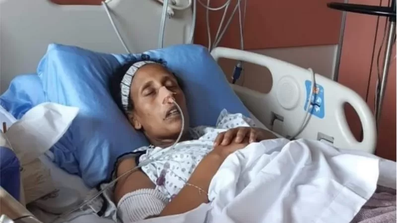

ከየፈርጁ

ማርስ ላይ ሕይወት ነበረ? 2 ቢሊየን ዶላር የወጣባት ሮቦት መልስ ይኖራታል

በአንድ ጀንበር ሚሊየነር የሆነው ታንዛኒያዊ ሌላ 2 ሚሊዮን ዶላር አገኘ

ብዙ ነገር ''አንድ'' የሆነባት ሃገር ኤርትራ

"ለኢትዮጵያ ሳተላይት ማምጠቅ ቅንጦት አይደለም"

ማሌዢያ፡ ዝንጀሮዎች የተማሪውን ስልክ ሰርቀው ፎቶ ተነስተው መለሱለት

21 ሚያዝያ 2022
የትዕግስት እና ሙሉጌታ ትውውቅ የወራት ቢሆንም በመካከላቸው የነበረው ፍቅር ግን በእጅጉ ጥብቅ ነበረ። ሁለቱ ጥንዶች አፍላ ፍቅር ውስጥ እንዳሉ አብረው ለመኖር በመወሰን ወደ ትዳር ገቡ። ይህ የሆነው በ2006 ዓ.ም ነበር። ወዳጅ ዘመድም ወልዳችሁ ሳሙ፣ ትዳራቹ ይባረክ ብሎ መረቃቸው። እነዚህ አዲስ ጎጆ ወጪዎች አፍላ ፍቅራቸውን ለማጣጣም የጫጉላ ሽርሽር ሄዱ። የጫጉላ ሽርሽራቸው ግን የደስታ ማዕበል ያሰጠመው ብቻ ሳይሆን የሐዘን ድባብ የተጫነውም ነበር። እዚያው ሽርሽር ላይ እያሉ ትዕግስት ሰውነቷ መቀያየር ጀመረ፤ ሆዷ አበጠ። አንዳንድ የቤተሰብ አባላት የሠርጋቸው ቀን ላይ በቬሎ ደብቃው ያለፈ እርግዝና ቢመስላቸውም፣ ለአዲሶቹ ባለትዳሮች ግን ጉዳዩ እርሱ እንዳልሆነ ገብቷቸው ነበር። ወድያውኑ ወደ ህክምና ተቋም አመሩ። "አሥመራ የሚገኙ የማህጸን እና ጽንስ ባለሙያዎች ጋር በሙሉ ሄድን፤ በግልጽ በሽታው ይህ ነው ሊሉን ስላልቻሉ ጊዜ ሳናጠፋ ወደ ሱዳን ሄድን" ይላል። መስከረም ወር መጨረሻ በ2007 ዓ.ም. ሱዳን ካርቱም ውስጥ ትዕግስትን የመረመሩት የሕክምና ባለሙያዎች የእንቁላል ማኩረቻ ካንሰር (Ovarian cancer) እንዳለባት ነገሯት።
ማህፀን የተለያዩ ክፍሎች አሉት የሚሉት የማህጸንና ጽንስ ስፔሻሊስቱ ዶ/ር ዳዊት መስፍን፤ ማህጸን፣ ቱቦዎቹ እንቁላል የሚመረትበት ስፍራ ወይንም ኦቫሪ መሆናቸውን ያስረዳሉ። የኦቫሪ ካንሰር የሚባለው በአንዲት ሴት እንቁላል ማኩረቻ ክፍል ላይ ያሉ ሕዋሳት ትክክለኛ የሆነ የመራቢያ መንገዳቸውን ሳይከተሉ ሲያድጉ እና እነዚህ በትክክለኛው መንገድ ያላደጉ ሕዋሶች ሲባዙ የሚፈጠር የካንሰር ዓይነት ነው። የኦቫሪ ካንሰር በዓለማችን ላይ ሞትን በማስከተል ደረጃ አምስተኛ መሆኑንም ዶ/ር ዳዊት ያብራራሉ።
ዶ/ር ዳዊት ሴቶችን ለኦቫርያን ካንሰር ከሚያጋልጡ ምክንያቶች አንደኛው እና ዋነኛው ከመጠን ያለፈ ውፍረት መሆኑን ያነሳሉ። ሌላኛው ደግሞ እድሜ ነው። እድሜያቸው ከ50 እና ከ60 በላይ የሆኑ ሴቶች ላይ የመከሰት እድሉ በጣም ከፍተኛ መሆኑን ይናገራሉ። በተጨማሪም ያላገቡ፣ አርግዘው የማያውቁ እንስቶች ወይንም ደግሞ ገና በልጅነታቸው የወር አበባ ማየት የጀመሩ ሴቶች ላይ በጣም በከፍተኛ ሁኔታ የሚከሰት መሆኑን አብራርተዋል።
ትዕግስት ያለባት የጤና ችግር ሲነገራት፣ በተስፋ መቁረጥ ስሜት አልተቀበለችውም። ባለቤትዋ ሙሉጌታ ግን በአፍላ ፍቅር የጀመረው ትዳሩ በሁለት እግሩ ሳይቆም በከባድ ፈተና መጀመሩ አስደንግጦታል። ትዕግስት በኦቫሪ ካንሰር መያዟን ስታውቅ የ25 ዓመት ወጣት ነበረች። ላለፉት ሰባት ዓመታትም ከበሽታው ጋር ትግል ገጥማለች። የትዕግስትን እጅ አልሰጥም ባይነት የተመለከቱት ለአምስት ዓመታት በሱዳን ህክምና ያደረጉላት የጤና ባለሙያዎችም ሆኑ ሌሎች 'ጀግናዋ' [Brave fighter] እያሉ ይጠሯት ነበር። ሙሉጌታ ስለበሽታው ግንዛቤ ስላልነበረው "አንዴ ከተያዙ ወዲያው መሞት ብቻ እንዳለ ነበር የሚሰማኝ " ይላል። "የሕይወት መልካሙን ገጽታ ብቻ ሳይሆን መጥፎውንም ማጣጣም እንዳለብን ያኔ ነው የገባኝ። መልካሙን ብቻ እያሰብን እንኖር ስለነበር ያጋጠመንን ችግር የምንወጣው አልመሰለኝም ነበር። የእርሷ ሞራል ግን እስከ መጨረሻ እጃችን ሳንሰጥ እንድታገል አድርጎኛል" ይላል። ትዕግስት፣ ጥቅምት 02/2007 ዓ.ም. ላይ የመጀመሪያውን ቀዶ ህክምና ስታደርግ 6 ኪሎ ግራም የሚመዘን ዕጢ ወጣላት። የትዕግስት የግራ ኦቫሪ ከባድ ጉዳት ደርሶበት ስለነበረ በህክምናው እንዲወገድ ተደረገ። ቀዶ ህክምናውን ያደረጉት ሐኪሞች ልጅ የመውለድ ዕድል እንዳላት በመግለጽ ሁለተኛው ኦቫሪ ቦታው ላይ እንዲቆይ ቢፈቅዱም፣ በጊዜ ሂደት የቀኙ ኦቫሪም በበሽታው እየተጠቃ መጣ። በዚህ ምክንያት የወር አበባዋ ቆመ፤ ለካንሰር ህክምና የሚወሰደው ኬሞቴራፒም (የጨረር ህክምና) የራሱ ጫና ስለነበረው በወቅቱ ሰውነቷ ላይ የነበሩ ለውጦች ቀላል እንዳልነበሩ ሙሉጌታ ያስታውሳል። "ይህ ሁሉ ተደማምሮ ለልጅ የነበረን ጉጉትን አጨለመው። እኔ ግን አፈቅራት ስለነበር ከእርሷ ውጪ ስለልጅ አይታየኝም ነበር። ለእኔ ሁሉ ነገሬ ስለነበረች፣ እኔም ለእርሷ የማልሆነው ነገር የለም ብዬ የአቅሜን ማንኛውም ነገር ለማድረግ ወሰንኩ።"
ትዕግስት የካንሰር ህክምናዋን በምትከታተልበት ወቅት፣ ሦስት ጊዜ ቀዶ ህክምና አድርጋለች። በየሳምንቱ አራት ሊትር የሚደርስ ደም ከሆዷ እየተቀዳም ይወጣ እንደነበር ባለቤቷ ይገልጻል። መጀመሪያ ላይ ስለነበረው ሕክምና ሲያስታውስ፣ "ከቀዶ ህክምና ክፍል ወጥታ እስከማያት ድረስ ከሆስፒታሉ ኮሪደር ላይ ተቀምጬ መንታ መንታውን አነባ ነበር" ይላል። በወቅቱ ዓለም በላዩ ላይ ክንብል ብላ የምትደፋበት የሚመስል ስሜት እንደተሰማው ያስታውሳል። ትዕግሥት ግን ከቀዶ ህክምናው ክፍል ቶሎ አልወጣችም፤ ዘገየች። ሐኪሟ ከቀዶ ህክምናው ክፍል የለበሰው ልብስና የእጅ ጓንት በደም ተጨማልቆ ሲወጣ ሁሉ ነገር ጨለመበት። በእጁ ሰማይን ደግፎ የመያዝ ያህል ስሜት ውስጥ ሆኖ ሲጠብቅ የነበረው ሙሉጌታ፣ ባለቤትህ በቀዶ ጥገና ላይ ብዙ ደም ስለፈሰሳት 36 ዩኒት ደም ያስፈልጋታል፤ ደም የሚሰጡ ስድስት ሰዎች አምጣ ተባለ። ወደ ሱዳን ሲመጡ ከተቀበለው ሰው ውጪ ሌላ የሚያውቀው ሰው ስላልነበረ ጨነቀው፤ ነገር ግን 'እንዲህ ተባልኩ' ብሎ ሲነግረው ፈቃደኛ የሆኑ ሰዎች ይዞለት መጣ። በሁኔታው የተገረመው ሱዳናዊው ሐኪም፣ "ይህንን ያህል ደም ወስደሽ ሱዳናዊ ሆነሻል" በማለት መቀለዱን ያስታውሳል። ትዕግስት በወቅቱ ባጋጠማት የደም መፍሰስ የምትተርፍ እንዳልመሰለውም ነግሯት ነበር። ከህክምናው በኋላ ተረጋግታ ራሷን ስታውቅ ባለቤቷ በአጠገቧ ተቅምጦ መንቃቷን ሲጠባበቅ ስትመለከተው "ለሁለተኛ ጊዜ አየሁህ ማለት ነው" ማለትዋን ያስታውሳል። "ሁሌም ታይኛለሽ" የእርሱ መልስ ነበር። ትዕግስት በተደረገላት ሦስት ቀዶ ህክምናዎች ዕጢዎች ወጥተዋላታል። ከዚያ በኋላም የኬሞቴራፒ ህክምናዋን ስትከታተል ቆየች። እንደ ዶ/ር ዳዊት ገለጻ በእንቁላል ማኩረቻ ላይ የሚከሰቱ ዕጢዎችን ጉዳት የማያስከትሉ እና የሚያስከትሉ በማለት በሁለት ከፍሎ ማየት ይቻላል። ጉዳት የማያስከትሉት የዕጢ ዓይነቶች በእንቁላል ማኩረቻው ላይ ውሃ በመቋጠር ከሦስት እስከ ስድስት ወር ባለው ጊዜ ውስጥ ይጠፋሉ። እነዚህ ሴቲቱ ለእርግዝና ክትትል ወይንም ለሌላ ህክምና አልትራሳውንድ በምትነሳበት ወቅት የሚታወቁ እና ምልክት የሌላቸው መሆናቸውንም አክለዋል። ወደ መጥፎ ደረጃ የሚቀየሩ የኦቫርያን ካንሰር ዓይነቶች የሚታወቁት ብዙ ጊዜ ከቆዩ በኋላ ነው። ስለዚህም ወደ ህክምና ተቋም በምትመጣበት ወቅትም ሆዷ አብጦ፣ ውሃ ቋጥሮ እና ትልቅ ዕጢ ሊሆን ይችላል። ካልሆነም ምንም ዓይነት እብጠት ሳይኖር የወገብ ህመም፣ የማህጸን አካባቢ ህመም፣ የዳሌ ህመም አጋጥሟት ወደ ሕክምና ተቋም ልትሄድ ትችላለች። ይህ የኦቫርያን ካንሰር የወር አበባ ማየት ያልጀመሩ እና በእድሜያቸው ለጋ የሆኑ ሴቶች ላይም ሊከሰት እንደሚችል ዶክተሩ ይናገራሉ። እድሚያቸው በ30ዎቹ፣ በ50ዎቹ እና በ60ዎቹ ውስጥ ያሉ ሴቶች ላይም ይከሰታል። እድሜያቸው በ50ዎቹ እና በ60ዎቹ ውስጥ የሆኑ ሴቶች ሆዳቸው አብጦ ወደ ሕክምና ተቋም እንደሚሄዱ የገለጹት ዶ/ር ዳዊት፣ በ30ዎቹ ውስጥ ያሉ ሴቶች ደግሞ የሚመጡት ደም ፈሷቸው ወይንም ደግሞ ዕጢው ሆዳቸው ውስጥ አብጦ እንደሆነ ያስረዳሉ።
ትዕግስት በመጀመሪያዎቹ አምስት ዓመታት በተደረገላት ህክምና ጤንነትዋ መሻሻል አሳየ። ያለ አንዳች ረዳት ወደ ኤርትራ ብቻዋን በመሄድ ቤተሰቦቿን ትጠይቃቸው፣ እንደ እምነቷም ጠበል ተጠምቃ፣ አገር አይታ ትመለስ ነበር። በ2012 ዓ.ም. ደግሞ ለተሻለ ህክምና ወደ ካናዳ ሄዱ። ሆኖም ግን የጠበቃቸው ነገር ካሰቡት የተለየ ስለነበረ ከባድ ጊዜ ያሳለፉት ካናዳ ውስጥ መሆኑን አቶ ሙሉጌታ ይናገራል። "ወደዚህ አገር ስንመጣ ተሽሏት ነበር፤ ትድናለች የሚል ተስፋ ነበረኝ። ወደ ቱርክ፣ ሜክሲኮ ለመውሰድም እሞክር ነበር። ተዳክማ እያየኋትም የመዳን ተስፋ እንዳላት ነበር የሚሰማኝ።" የካናዳ ጤና ባለሞያዎች ያለችበት ሁኔታ በሳይንሳዊ መንገድ አስልተው "የሁለት ወር እድሜ ነው ያለሽ" ቢሏትም ተገቢውን የህክምና ክትትል ባለማቋረጧ ከአንድ ዓመት በላይ በሕይወት ቆይታለች። ትልቁ የካንሰር በሽተኛ ትግል ኑሮው ወይም ገንዘብ ብቻ ሳይሆን ሞራልም ጭምር ነው የሚለው ሙሉጌታ፣ በሽታው ምንም ያህል ከባድ ቢሆን በባለቤቴ ሥነ ልቦናዊ ሁኔታ ላይ በማተኮር ክትትል አደርግላት ነበር ይላል። "በሥራ ወይም በሌላ አስፈላጊ ጉዳይ ከአጠገቧ ከተለየሁ እደነግጣለሁ፤ በተለይ በእርሷ ስልክ ከተደወለልኝ የሆነ ነገር ሆናለች ማለት ነው ብዬ እረበሻለሁ፤ ነገር ግን አንድም ቀን ተስፋ ቆርጬ አላውቅም" ብሏል። በተጨማሪም "እርሷ የሕይወቴ መምህር ናት፤ ይሄ ሁሉ ከእርሷ የተማርኩት ነው። . . .'አይዞህ ፍቅር ይሻለኛል' ብቻ ነበር የምትለኝ። በስሜ ጠርታኝ አታውቅም፤ 'ፍቅር' ነበር የምትለኝ . . . [ረጅም ዝምታ እና ለቅሶ] . . . "። በዓለማችን የካንሰር በሽታ የሚሊዮኖች ሞት ምክንያት ነው። በ2020 ብቻ 10 ሚሊዮን የሚጠጉ ሰዎች በዚህ ህመም ምክንያት መሞታቸው የዓለም የጤና ድርጅት መረጃ ያመለክታል። አብዛኛዎቹ ሴቶች ደግሞ በተለያዩ የካንሰር በሽታ ዓይነቶች እንደሚጠቁ ባለሙያዎች ይገልጻሉ። ሙሉጌታ እና ባለቤቱ ላለፉት ሰባት ዓመታት ከዚህ በሽታ ጋር ባደረጉት ትግል ጽናት የሰጣቸው አንዱ ነገር፣ ሁኔታውን መቀበላቸው እና ተገቢውን የህክምና ክትትል ለማድረግ ጥረት ማድረጋቸው መሆኑን ያነሳል። "ቀላል አይደለም፤ ብዙ ነገር አይተን ተምረንበታል። መሞት እና በሕይወት መቆየት የፈጣሪ ሥራ ሆኖ መቀበል ግን ትልቅ ፈውስ ነው። ከሚወሰዱ መድኃኒቶች ጋር በሕይወት የመቆየት እድል ይጨምራል" የሚል እምነት አለው። በመሆኑም እስከ መጨረሻው ተስፋ አልቆረጠም። ገና ጎጆ ከመቀለሳቸው ወደ ሕይወታቸው ዘው ብሎ የገባው ይህ ሕመም በርካታ ነገር በጋራ እንዲያልፉ አድርጓቸዋል። የባለቤቱን አካላዊ ለውጥ፣ የሥነ ልቦና ትግል በጋራ አስተናግደውታል። በዚህ ሁሉ ውስጥ ፍቅራቸው ሳይቀዘቅዝ መዝለቁንም ሙሉጌታ ይናገራል። "ልጅ አልወለድንም [ረጅም ዝምታ]. . . ለእኔ በአካል እንጂ በመንፈስ ጤነኛ ሰው ነበረች። ስለዚህ ትዳር ከልጅ ጋር ነው የሚሞቀው የሚለው ነገር አእምሮዬ ውስጥ አልነበረም። ጤና ካለ ሁሉም ነገር ማድረግ ይቻላል" ብሏል። ከህመሟ ጋር ስትታገል የቆየችው ትዕግስት ግንቦት አጋማሽ 2013 ዓ.ም የመጨረሻዋን እስትንፋስዋን ተነፈሰች፤ ሕይወቷ አለፈ። "እርሷን ለማስታወስ በለኮስኩት ሻማ ፊት ሆኜ ነው የማወራሽ . . . ለረዥም ዓመታት ተስፋ ሳልቆርጥ ኖሬ፣ እጄ ላይ ስትሞትብኝ ተስፋ ቆረጥኩት። ስሞት ካጠገብህ አታርቀኝ ስላለች እዚህ ነው የቀበርኳት። በተለያየ አጋጣሚ እየሄድኩ አያታለሁ" በማለት እንባ በተሸፈነ ስሜት ይናገራል። በዚህ በሽታ ምክንያት ብዙ ዋጋ የከፈሉ ሴቶች እንዳጋጠሙት የሚናገረው ሙሉጌታ፣ "ሁሉም በዚህ በሽታ የተያዘ ይሞታል ማለት ግን አይደለም፤ በሱዳን ህክምና አድርገው ልጅ መውለድ ድረስ የደረሱ ሰዎች አውቃለሁ" ሲል ሰዎች ህክምናው ላይ ተስፋ መቁረጥ እንደሌለባቸው ያሳስባል። በርካታ ሰዎች፣ የዚህን በሽታ ህክምና ለማግኘት ብዙ ወጪ እንደሚያወጡ ይታወቃል። በተለይ ቀዶ ህክምና እና ሌሎች ህክምናዎችን ለማግኘት ወደ ውጭ አገራት ሲኬድ ዳጎስ ያለ ገንዘብ ያስፈልጋል። ሙሉጌታም ለረዥም ዓመታት አጠገቡ ሆነው በገንዘብ እና በሞራል በርካታ ኤርትራውያን፣ ኢትዮጵያውያን፣ ሱዳናውያን እና ሌሎችም ደግፈውታል። የኦቫሪ ካንሰር እንደሌሎቹ ካንሰር አይነቶች በቀላሉ የመገኘት እድሉ በጣም ዝቅተኛ ነው። በተለይ እንደ ኢትዮጵያ ባሉ ታዳጊ አገራት በየጊዜው የሕክምና ክትትል ስለማይደረግ ዘግይቶ እንደሚታወቅ ባለሙያዎች ያስረዳሉ። ከፍተኛ ውፍረት ያላቸው፣ ያልወለዱ ሴቶች ይህንን ታሳቢ አድርገው ምረመራ ቢይደርጉ ሲሉ ይመክራሉ። በተለይ ለጡት እና ለአንጀት ካንሰር የተጋለጠ የቤተሰብ አባል ያላቸው ሴቶች ለኦቫርያን ካንሰር የመጋለጥ እድል ስላላቸው ቅድሚያ ክትትል ማድረግ ያስፈልጋቸዋል። ሙሉጌታ አሁን በካናዳ አልበርታ፣ ካልጋሪ ከተማ ነው የሚኖረው። ባለቤቱ በሞት ከተለየችው አንድ ዓመት ሊሞላ ተቃርቧል። "አሁን እርሷ የምትሸፍነው ባዶ ሆኗል . . . አሁን ነው የከበደኝ እንጂ የህመምዋ ጊዜ ከባድ አልነበረም" ይላል። የዕለት ኑሮውን ለመግፋት እየሰራ የወደፊት ሕይወቱን ለማስተካከል ደግሞ እየተማረ መሆኑን የሚናገረው ሙሉጌታ በዋናነት የካንሰር ህሙማን በመርዳት እና የግንዛቤ ማስጨበጫ ስራዎችን በመስራት እየተንቀሳቀሰ ይገኛል።